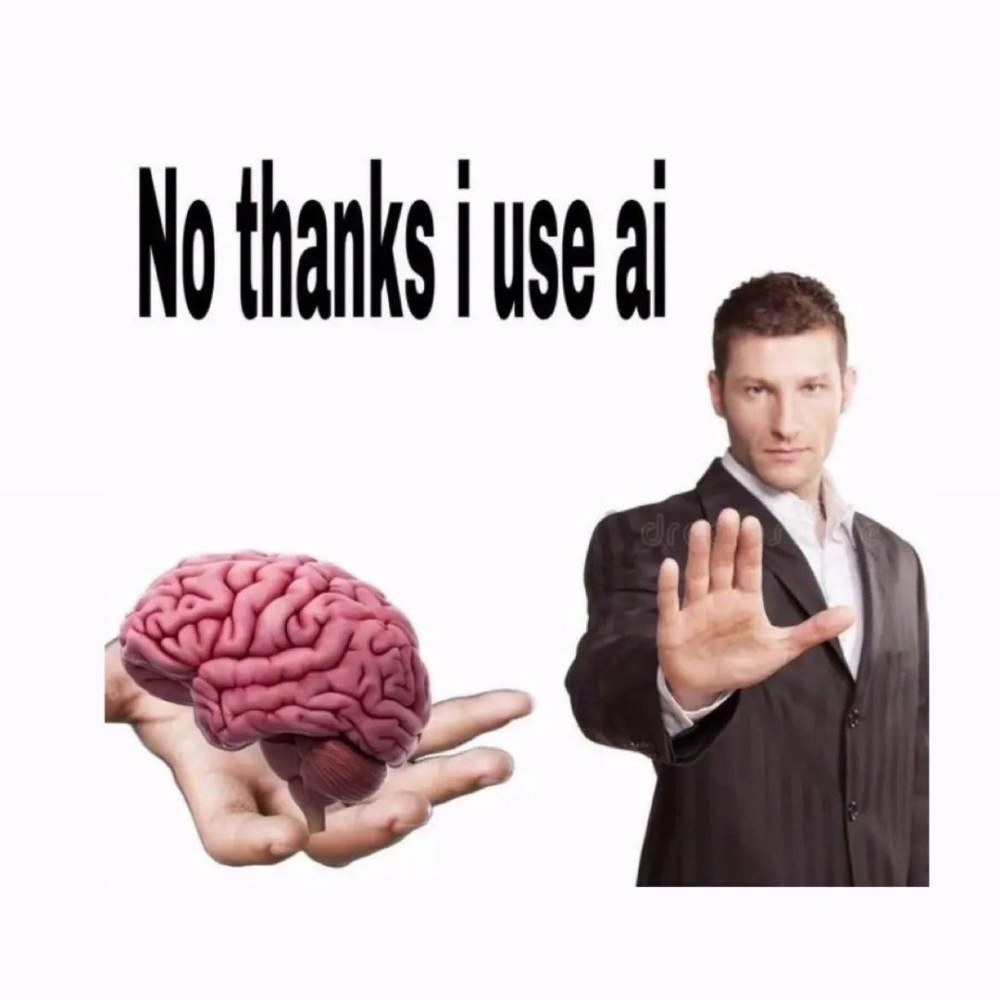
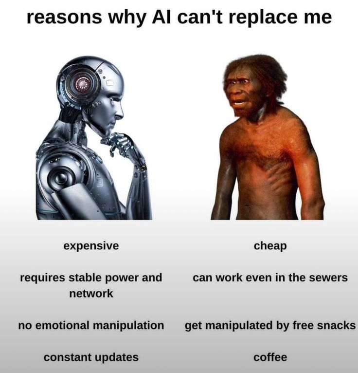
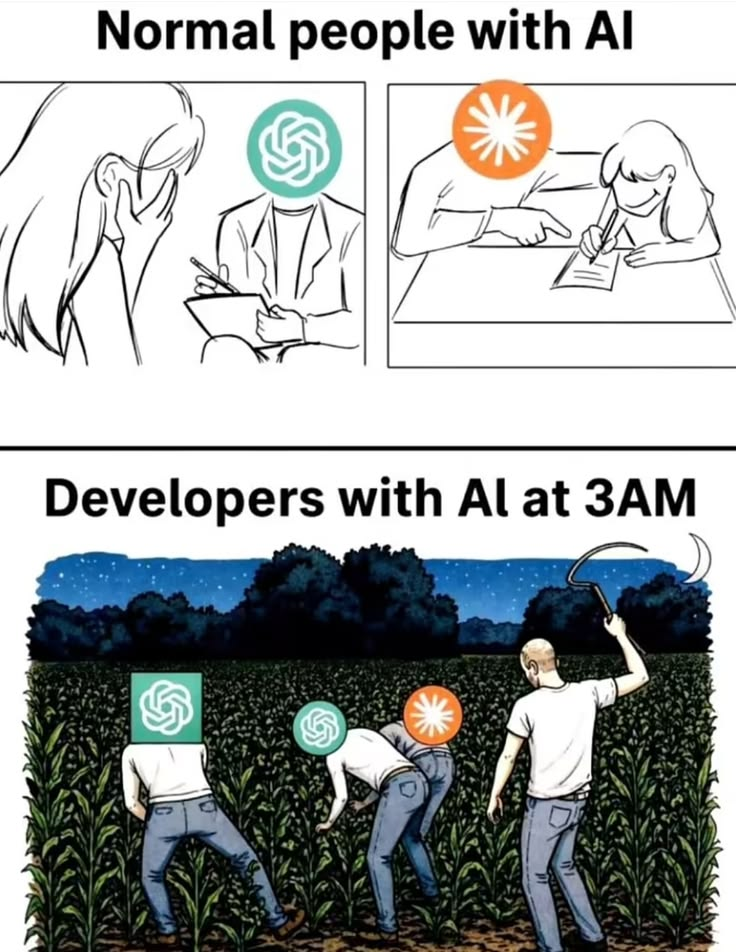
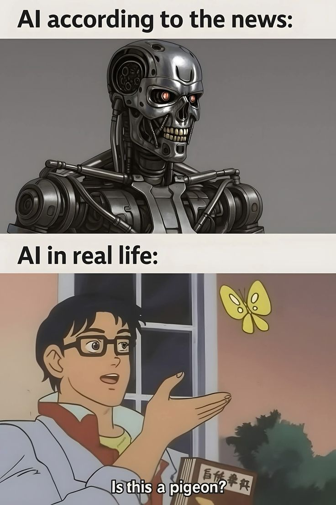

<
Close AI
/>
Why is AI a shit?
created with the support of Chat GPT
Artificial intelligence is everywhere nowadays. People use AI to study, work, create pictures, write texts, and even communicate with other people. At first, AI seems like an amazing technology that can make our lives easier. However, sometimes AI can be really annoying and, honestly, kind of shit.
First of all, AI is not always correct. It can give completely wrong information while sounding very confident. This is especially annoying when a person does not know the subject well and trusts the AI without checking the answer. Instead of helping, AI can make the situation even worse.

Another problem is that AI can make people lazy. If students use AI to write every essay, solve every problem, and do all their homework, they stop thinking for themselves. They may get a good answer, but they do not actually learn anything. In the future, this can become a serious problem because people need their own skills and knowledge.

AI can also make creative work feel less special. Artists, writers, musicians, and designers spend years developing their skills. When AI can create something in a few seconds, some people may stop appreciating the time and effort behind real human creativity.

Finally, AI sometimes just does not understand what you want. You can explain something five times, and it will still give you something completely different. Then you sit there thinking, “How did you even get that from what I said?”
The internet is becoming full of AI-generated pictures, videos, articles, and comments. A lot of this content is repetitive or completely useless. Sometimes it feels like you have to search through a mountain of AI garbage just to find something made by a real person.

AI is advertised as incredibly intelligent, but sometimes it cannot understand a simple question. You can explain exactly what you want, and it will confidently give you something completely different. Apparently, “artificial intelligence” sometimes means “artificial understanding.”
contact us(please don't do it): +38 393 484 3493
tell us why ai is not a shit(you can't do it): tg: @shiteater
order a website(overprice): "ssylka"
.png)